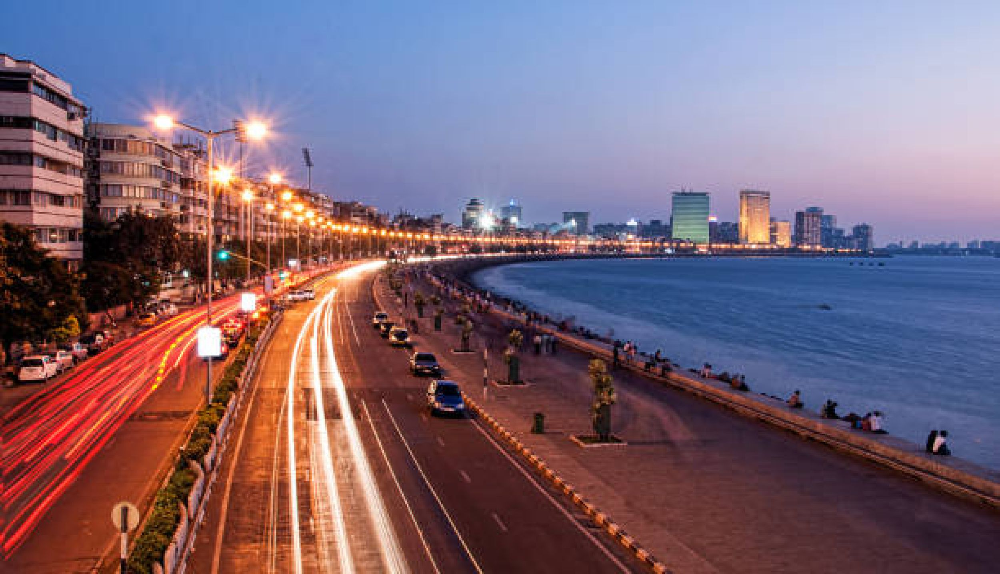

Known as the **"Queen's Necklace,"** Marine Drive is a 3.6-kilometer long boulevard along the coast of the Arabian Sea. The drive is a popular spot for an evening stroll, offering a magnificent view of the city skyline and the sparkling lights that resemble a string of pearls at night. The walkway is lined with beautiful Art Deco buildings, which were constructed in the 1920s and 1930s.
The area is a favorite for Mumbaikars to relax, exercise, and watch the spectacular sunsets. The sound of the waves crashing against the tetrapods and the gentle sea breeze make it a perfect escape from the city's hustle and bustle.

Image source:wikipedia.org